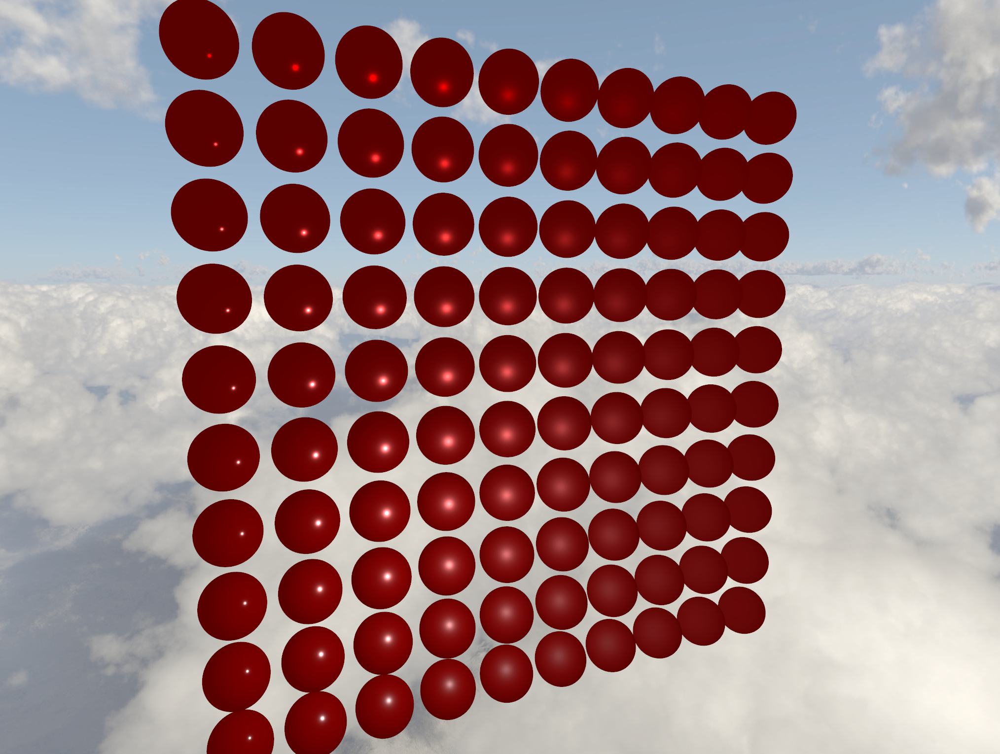

a simple graphics library written in C for Vulkan and OpenGL application programing and video game development
source code: levikno
Levikno is a graphics framework built in C99 for game development and multimedia applications. The Levikno library is built on top of OpenGL and Vulkan and is designed to support multiple graphics APIs.
The core API structure of levikno is designed similar to Vulkan's API calls including pipelines, buffers, descriptor layouts/sets and command buffers used for rendering graphics.
Note: levikno is in an active rewrite from its original library written in C++17
you can view the original source code on github at levikno-legacy.

custom memory arena and pool allocators written in C99 with custom allocation alignment requirements
source code: lvn_cma.h
lvn_cma is a single header file library written in C99 for custom memory allocation management utilizing memory pools and memory arenas to handle memory allocations.
Internally, both the pool and arena use a memory block structure which stores the actual memory allocation, blocks also act like linked-lists allowing memory blocks to be chained for pool/arena allocation growth.
With that said, pools and arenas determine the behavior of how memory allocations should be made to the blocks. Pools allow the user to request allocations of the same size minimizing fragmentation and allowing memory to be freed and reused.
The arena allows the user to request their own sized allocations, additional arena features include arena resets and arena marks.
Both the pool and arena allow specific alignment requirements allowing the user to pass in a more strict memory alignment.
a simple graphics library written in C for Vulkan and OpenGL application programing and video game development
source code: lvn_gmath.h
lvn_gmath is a single header math library written in C99 for graphics math including vectors and matrices math.
Supports vector/matrix types of floating point numbers, signed and unsigned 8 to 64-bit integers types.
click on a project to learn more about it